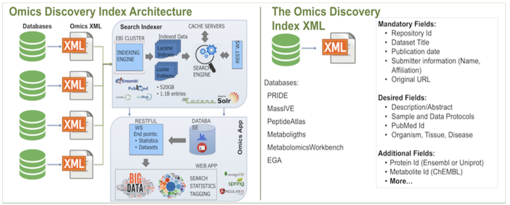

Omics Discovery Index (OmicsDI) expects data from Providers in common XML Format*.

The architecture of OmicsDI starts with an XML file that contains the information from all datasets in a given database. XML files are retrieved from providers nightly, and every new dataset in the provided XML file is added to OmicsDI automatically.
Each file in OmicsDI is indexed using EBI Search System and the final information is made available via web services. EBI Search System also contains indexes of other major databases such as Uniprot, Ensembl and PubMed, allowing data providers to cross-link biological entities in their datasets with those resources.
*For any queries about OmicsDi XML Format or data submissions to OmicsDI please contact:
omicsdi-support@ebi.ac.uk
OmicsDI XML: High Level Structure
The OmicsDI XML is used to represent metadata of any database (including all of its datasets) via the following common generic structure:
<database>
<name>Database Name</name>
<description>Database Description</description>
<release>Release tag or number</release>
<release_date>Release date</release_date>
<entry_count>Number of entries</entry_count>
<entries>
<entry id="Dataset_ID_1">
<name>Name of the Dataset</name>
<description>Description of the dataset</description>
<cross_references>
<ref dbkey="CHEBI:16551" dbname="ChEBI">
<ref dbkey="MTBLC16551" dbname="MetaboLights">
<ref dbkey="CHEBI:16810" dbname="ChEBI">
</cross_references>
<dates>
<date type="submission" value="2013-11-19">
<date type="publication" value="2013-11-26">
</dates>
<additional_fields>
<field name="repository">Repository</field>
<field name="omics_type">Omics Type</field>
</additional_fields>
</entry>
</entries>
</database>
Cross references section allows for linking the dataset to external databases. The dbkey contains the dataset identifier in the linked database, itself identified via dbname.
OmicsDI defines a hierarchical metadata schema for each dataset, divided into three main categories: Mandatory, Recommended and Additional. The scoring system in the OmicsDI search engine boosts datasets that provide more metadata, thus rewarding researchers that have annotated their results more thoroughly. The following tables describe the metadata fields for each category, with examples and description in each case. This document describes the structure of OmicsDI schema version 1.0, the corresponding metadata fields and types of fields. For each field in OmicsDI schema we have defined three types of categories:
- Mandatory (M) : These fields must be provided for the OmicsDI schema to be valid, and are part of the minimum information required to represent a dataset in OmicsDI;
- Recommended (R) : These fields should be provided to be searchable and displayed adequately in OmicsDI web interface and web services;
- Additional (A) : These fields should be provided to add value to the dataset - the more metadata a dataset contains, the more sense OmicsDI infrastructure can make out of the data. For example, if the proteins, genes or metabolites are provided for each dataset; OmicsDI is able to find other datasets where those biological entities have been found or studied.
OmicsDI XML: Database Section
All the information required for inclusion in OmicsDI is contained within the database section of the XML file (see generic structure above):
| Field |
Comment |
Example |
Type |
| name | Name of the database or provider | <name>PRIDE</name> | M |
| description | A short description of the provider. This description is shown in OmicsDI web interface and can be used in OmicsDI search. | <description>The proteomics identification database is an EBI resource for Proteomics</description> | R |
|
| release | The tag for the database release to which the data belongs. | <release>Release-May-2016</release> | A |
| release_date | The date of the database release to which the data belongs. This field may be used to store the date the data was generated, if applicable. | <release_date>2015-05-13</release_date> | R |
| entry_count | The number of entries in the XML file. This field is used for validation purposes. | <entry_count>2</entry_count> | R |
Providers may add further information to the database section but it will not be captured during the indexing process, e.g.<license> Apache 2.0 </license>
Note that it makes sense for small databases to provide their data to OmicsDI as a single full-repository XML file. However, most ‘omics resources contain a large number of datasets, making it impracticable to exchange their data in a single file. Such resources may provide their data via multiple XML files in the same format as described above, each containing a distinct subset of dataset entries. Note that entry_count in each xml file should correspond to the number of entries in that file only, not the overall number of entries provided from that database.
OmicsDI XML: Entries Section
The entries section contains all the datasets provided in a given XML file. The <entries> tag is used to list all the entries. Each dataset is enclosed in an <entry> tag.
Each entry consists of three different sections: General information, Cross-references and Additional Fields.
A dataset in OmicsDI must have four different attributes: an identifier, a name, a description and a date of publication. In addition, other (optional) dates may be provided: submission, updated and creation, as listed in the table below:
| Field |
Comment |
Example |
Type |
| id | Original and UNIQUE identifier across the repository, database or provider | <entry id="PXD000001"></entry> | M |
| name | Name, title of the dataset, can be considered as the title of the publication | <name>TMT spikes</name> | M |
|
| description | A short description or abstract of the dataset. It can be considered similar to a "publication abstract" | <description>Expected reporter ion ratios: Erwinia peptides</description> | M |
|
| date | Date of publication of the dataset | <date type="publication" value="2014-09-22"> | M* |
|
| date | Date of initial creation of dataset submission in the database | <date type="creation" value="2014-09-22"> | M* |
|
| date | Date of successful submission to the database | <date type="submission" value="2014-09-22"> | M* |
|
| date | Date of the latest update to the dataset | <date type="updated" value="2014-09-22"> | M* |
|
*Note that
at least one of the date fields above must be present.
For example:
<entries>
<entry id="ST000004">
<name>Lipidomics studies on NIDDK / NIST human plasma samples</name>
<description>The National Institute of Diabetes and Digestive and Kidney Diseases (NIDDK) in collaboration with the National Institute of Standards (NIST) recently produced a human plasma standard reference material (SRM 1950) for metabolite analysis.
</description>
<dates>
<date type="creation" value="2013-02-01">
<date type="publication" value="2014-09-22">
<date type="submission" value="2013-11-19">
<date type="updated" value="2014-05-21">
</dates>
...
</entry>
...
</entries>
All biological and experimental metadata for a given da; taset is represented using a key-value pair structure under the tag <additional_fields>. The generic key-value pair structure allows data providers to represent any information that is necessary to represent their dataset adequately and make it discoverable via OmicsDI search.
While OmicsDI places no restriction on the content of key-value pairs, some fields have been agreed and standardised by the 'omics community and should be provided in a consistent way. It is important to note that every key-value pair is a single representation of the value. If the user wishes to represent multiple values for the same key then the same tag should be repeated, for example:
| Field |
Comment |
Example |
Type |
Cardinality |
| omics_type | A category for the type of omics dataset (from a controlled vocabulary used by OmicsDI) | <field name="omics_type">Proteomics</field> | M | [1..n] |
| data_protocol | Description of the software, pipeline and tools used to process the data | <field name="data_protocol"></field> | R | [0..n] |
| sample_protocol | Description of the biological sample handling protocol | <field name="sample_protocol"></field> | R | [0..n] |
| repository | The name of the repository or provider* | <field name="repository">PRIDE</field> | M | [1] |
| species | Specie studied in the experiment that generated the data (Free Text) | <field name="species">Homo sapiens</field> | A | [0..n] |
| disease | Disease studied in the experiment that generated the data (Free Text) | <field name="disease">Lung carcinoma</field> | A | [0..n] |
| tissue | Tissue studied in the experiment that generated the data (Free Text) | <field name="tissue">Lung</field> | A | [0..n] |
| cell_type | Cell type studied in the experiment that generated the data (Free Text) | <field name="cell_type">brain cortex glial cell</field> | A | [0..n] |
| full_dataset_link | The original link of the dataset in the provider’s web service, it should be a universal URL that can be used to find the original data | <field name="full_dataset_link">
http://www.ebi.ac.uk/pride/archive/projects/PRD000123
</field> | M | [1] |
| submitter | Name of the person who submitted the data into the original repository | <field name="submitter">Yasset Perez-Riverol</field> | A | [0..n] |
| submitter_mail | Submitter’s contact email | <field name="submitter_mail">yperez@ebi.ac.uk</field> | A | [0..n] |
| submitter_affiliation | Submitter’s affiliation, institution, department, etc. | <field name="submitter_affiliation">European Bioinformatics Institute</field> | A | [0..n] |
| instrument_platform | Instrument used to analyze the experiment’s samples | <field name="instrument_platform">LTQ Orbitrap</field> | R | [0..n] |
| technology_type | Technique of instrumental analysis used in the experiment | <field name="technology_type">Tandem MS/MS</field> | A | [0..n] |
| modification | Post-translational modifications; used mainly in Proteomics experiments | <field name="modification">Oxidation</field> | A | [0..n] |
| submitter_keywords | Keywords describing the dataset further, in this case added by the submitter of the data | <field name="submitter_keywords">ProteoGenomics</field> | A | [0..n] |
| quantification_method | Free text describing the quantitative method used in the data analysis | <field name="quantification_method">SILAQ</field> | A | [0..n] |
| submission_type | In ProteomeXChange this field is used to classify the type of submission | <field name="submission_type">COMPLETE</field> | A | [0..n] |
| software | Software used for data analysis | <field name="software">Trans-Proteomics Pipeline</field> | A | [0..n] |
| publication | Free text describing the publications, citation, title** | <field name="publication">Effect of Obesity on the Preovulatory Follicle.</field> | A | [0..n] |
| dataset_file | This a URL of an individual data file in the dataset. | <field name="dataset_file">
ftp://ftp.pride.ebi.ac.uk/pride/data/archive/2010/07/
PRD000123/PRIDE_Exp_Complete_Ac_9777.xml.gz
</field> | A | [0..n] |
The <additional_fields> section provides a mechanism for adding free text to OmicsDI XML and is important for search capabilities, however, is not well-designed for structured data where references and identifiers should be provided. For that information OmicsDI XML provides the <cross_references> section (see below).
OmicsDI provides a mechanism to store and handle data that is well-referenced, structured and with common identifiers such as biological entities, ontology terms, taxonomies, publications, etc. The cross-reference fields are used for those properties that link to other indexed databases. For example, if PubMed identifier is known a cross-reference should be added referencing PubMed database.
<entries>
<entry id="BIOMD0000000900">
<name>Bianca2013 - Persistence analysis in a Kolmogorov-type model for cancer-immune system competition</name>
<description>Persistence analysis in a Kolmogorov-type model for cancer-immune system competition
AIP Conference Proceedings 1558, 1797 (2013); https://doi.org/10.1063/1.4825874
C. Bianca
Dipartimento di Scienze Matematiche, Politecnico di Torino, Torino, Italy
F. Pappalardo
Dipartimento di Scienza del Farmaco, Università degli Studi di Catania, Catania, Italy
M. Pennisi and M. A. Ragusa
Dipartimento di Matematica e Informatica, Università degli Studi di Catania, Catania, Italy
</description>
<dates>
<date type="submission" value="2019-12-18">
<date type="publication" value="2019-12-18">
<date type="last_modification" value="2019-12-18">
</dates>
<additional_fields>
<field name="submitter">Mohammad Umer Sharif Shohan</field>
<field name="submitter_mail">msharifshohan@ebi.ac.uk</field>
<field name="repository">BioModels</field>
<field name="full_dataset_link">https://www.ebi.ac.uk/biomodels/BIOMD0000000900</field>
<field name="publication">This paper is concerned with analytical investigations on the competition between cancer cells and immune system cells. Specifically the role of the B-cells and T-cells in the evolution of cancer cells is taken into account. The mathematical model is a Kolmogorov-type system of three evolution equations where the growth rate of the cells is described by logistic law and the response of B-cells and T-cells is modeled according to Holling type-II function. The stability analysis of equilibrium points is performed and the persistence of the model is proved.. 1, 1558.
Dipartimento di Scienze Matematiche, Politecnico di Torino, Torino, Italy
Dipartimento di Scienza del Farmaco, Università degli Studi di Catania, Catania, Italy
Dipartimento di Matematica e Informatica, Università degli Studi di Catania, Catania, Italy
</field>
<field name="modellingApproach">Ordinary differential equation model</field>
<field name="omics_type">Models</field>
<field name="modelFormat">SBML</field>
<field name="submissionId">MODEL1912180002</field>
<field name="publicationId">BIOMD0000000900</field>
<field name="publication_year">2013</field>
<field name="levelVersion">L2V4</field>
<field name="curationStatus">Manually curated</field>
<field name="non_derived_xrefs">BIOMD0000000900 biomodels.db MODEL1912180002 biomodels.db</field>
<field name="publication_authors">C. Bianca, F. Pappalardo, M. Pennisi and M. A. Ragusa</field>
<field name="first_author">C. Bianca</field>
<field name="tokenised_name">Bianca2013 Persistence analysis in a Kolmogorov type model for cancer immune system competition</field>
</additional_fields>
<cross_references>
<ref dbkey="9606" dbname="taxonomy">
<ref dbkey="C25513" dbname="ncit">
<ref dbkey="GO:0006955" dbname="go">
<ref dbkey="10.1063/1.4825874" dbname="doi">
<ref dbkey="10.4039/entm9745fv" dbname="doi.org">
<ref dbkey="0000311" dbname="efo">
<ref dbkey="BTO:0000776" dbname="bto">
<ref dbkey="BTO:0000782" dbname="bto">
<ref dbkey="C64914" dbname="ncit">
<ref dbkey="C64382" dbname="ncit">
</cross_references>
</entry>
...
</entries>